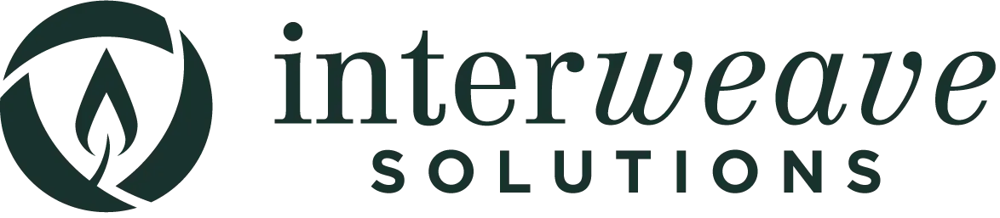
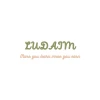

Each is a 10 day experience that will allow you to work hand in hand with Interweave Solutions
Success Ambassadors and MBS graduates as they strive for success in becoming self-reliant.
Participating in these trainings will help empower the group to lift themselves out of poverty.
You will gain the unique perspective of experiencing the real world of South Africa/Ecuador as
well as touring the magnificence that these countries have to offer.
Weather
---
- ºC
----

Interweave Solutions
Interweave Solutions is an international nonprofit organization that
specializes in self-reliance. Outstanding people around the world are able to change their lives
through our Masters of Business in the Streets, Literacy and Success Ambassador Programs. They
learn how to start or grow their own businesses and create plans to improve their homes and
communities.
Beacam
Baecam is an association nonprofit that help people start and grow
their own business
Develop a personal improvement plan
Create a community service plan
Networking
Join a Facebook group for MBS graduates. (learn and connect with successful micro-business
owners around the world)
Opportunity
Take the Success Ambassador course at no extra charge
Become a Success Ambassador

Ludaim
Learning a new competence can help you find your way to a brighter future.
Our real-life professionals provide hands-on experience in the fields of computer science,
entrepreneurship, and business management.
Would you like to broaden your horizons or change careers by studying one of the topics we
offer? You've come to the right place.
Our instructors are actual people who are eager to share their knowledge with students from all
around the world.
You will always be one step ahead of the competition when you work with us.